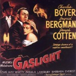

”Gaslighting” är den engelskspråkiga benämningen på en form av psykisk manipulation, eller psykisk misshandel. Ordet är hämtat från filmen Gaslyktan (Gaslight) från 1944, som ledde till en Oscar för Ingrid Bergman. Bergmans make i filmen, spelad av Charles Boyer, vill komma över hennes ärvda smycken. Hans plan är att få sin fru förklarad sinnessjuk och inlåst på institution. För att åstadkomma detta undergräver han systematiskt hennes förtroende för den egna verklighetsuppfattningen, bland annat genom att strypa tillförseln av gas till ljuskällan i hennes rum; gaslampan (föregångare till den elektriska lampan); så att ljusstyrkan ökar och minskar. Varje gång Bergmans karaktär reagerar på att lampans ljussken flämtar försäkrar han henne att hon bara inbillar sig. Genom att gömma och flytta på saker försöker han även få henne att tro att det är hon själv som tappat bort sakerna, eller till och med stulit dem, utan att hon själv kommer ihåg det.
Tidigare inlägg här om: Psykisk misshandel på film – Klassiker:
Gaslyktan eller Gasljus (Gaslight), 1944

Poster "Gaslight" 1944
Från handlingen i den filmen har man alltså hämtat begreppet ”gaslighting” för att bildligt beskriva ett förfarande där en förövare förmedlar falsk information till ett offer i syfte att förvränga offrets uppfattning om sig själv och sin egen verklighet. Förövaren försöker systematiskt urholka offrets tilltro till den egna uppfattningsförmågan, bedömningsförmågan, minnesförmågan och förståndet. Detta görs genom att förövaren gång på gång påstår inför offret att vad offret upplever, uppfattar, ser, hör och minns, är felaktigt. Och gradvis börjar då offret tvivla på sin egen verklighet och ger upp.
Det handlar antingen om systematiska förnekanden av verkliga händelser, eller om aktiv iscensättning av otroliga, svårbegripliga och bisarra händelser. Båda med avsikt att förvirra och förmå offret att betvivla egna kognitiva funktioner. Andra engelskspråkiga benämningar på denna typ av manipulation är ambient abuse, eller stealth abuse. Någon svensk benämning har jag inte hittat, men kanske någon läsare kan hjälpa till med vad det heter på svenska? Kommentera gärna och berätta i så fall.
Förövaren av ”gaslighting” är en person som av någon anledning har ett stort behov av att ha kontroll över offret. Kontrollbehovet kan komma sig av att förövaren har en rädsla för att bli lämnad, är svartsjuk eller har ett stort behov av att dominera. Projektion kan vara en stark faktor bakom ”gaslighting”. Det innebär att förövaren själv inte har rent mjöl i påsen, men istället för att se sina egna tillkortakommanden ägnar han sig åt att anklaga andra för att ha dessa brister, eller för att ha begått gärningar som han själv egentligen begått. Behovet av kontroll kan också handla om ekonomisk eller annan brottslighet, som i filmen med Ingrid Bergman och Charles Boyer: Förövaren har ett mål med det han gör som ska leda till ekonomisk vinning. Det kan också handla om att förövaren vill dölja tidigare illgärningar eller felsteg, vilka offret blivit vittne till, eller utsatts för. Förövaren kan också ägna sig åt gaslighting på grund av önskan att hämnas på offret för någon oförrätt, eller helt enkelt bara som en form av mobbning.
Offret är en person som på ett eller annat sätt har ett stort behov av att ha kvar relationen till förövaren. Till exempel ett behov av godkännande, tillhörighet och/eller kärlek, som offret förväntar sig kunna få från förövaren, bara hon eller han kan anpassa sig tillräckligt väl till förövarens krav. Offret kan också vara en person som helt enkelt inte kommer undan förövaren på grund av sjukdom eller handikapp, på grund av att offret är ett barn och förövaren är barnets vårdnadshavare, eller på annan, icke självvald, fysisk- eller ekonomisk beroendeställning.
Grundprincipen för gaslighting: Förövaren handlar på något vis – ofta drar han/hon ett kränkande skämt, eller häver ur sig en kränkande kommentar – som skapar en reaktion hos offret. Reaktionen kan vara exempelvis ilska, frustration eller sorg. Då, när offret reagerar, försöker ”gaslightern” få offret att känna sig osäkert och obekvämt med sin egen reaktion genom att bete sig som om offrets känslor är irrationella och onormala.
Typiskt är att förövaren svarar något av: Du är så känslig. Du är överkänslig. Du är så känslosam. Du är så defensiv. Du överreagerar. Lugna ner dig. Koppla av nu, va? Du flippar ur! Du är knäpp! Du är galen! Jag bara skämtade, har du inget sinne för humor? Du är så dramatisk!
Mamman: "Allt du gör blir bara skit av!"
Dottern: "Men va? Nu blev jag ledsen. Jag vill inte att du säger så där till mig."
Mamman: "Du har ju ingen humor. Jag skojade bara!"
En annan ganska vanlig respons vid gaslighting är att skylla på den andra personens uppfattning av vad som hände, för att kringgå konsekvenserna av den egna handlingen: "Jag är ledsen att du uppfattade det jag sa på det sättet, det var inte min avsikt." Översättning: "Du är perceptuellt defekt. Alla andra i världen kan läsa mina tankar, om du inte kan det, måste det vara något fel på dig. Eller det vill jag i alla fall att du ska tro."
Det klassiska exemplet på gaslighting är att flytta på saker i offrets omgivning på ett sånt sätt som man vet att offret kommer att lägga märke till, för att sedan förneka att man har något med ommöbleringen att göra och påstå att offret ”måste inbilla sig”. Så gjorde Charles Manson och hans ”familj” när de på 1960 talet övade sig på att göra inbrott. De smög in i hus om natten, när de boende låg och sov, och möblerade om i vardagsrum och kök, för att sedan smyga igen ut så tyst de kunde, utan att ha tagit någonting – i syfte att testa hur obemärkt de kunde ta sig in och ut.
Vi gör alla bruk av ”gaslighting” då och då. Det är mänskligt, för ibland har vi alla behov av att förneka något dumt vi råkat säga eller göra. Exemplet med mammas replik till dottern ovan är mycket vanligt förekommande. Att sådant ibland förekommer i en relation gör sällan någon skada. Men om det förekommer hela tiden, och speciellt om det riktas mot barn och unga, kan det göra mycket stor skada. När målet med ”gaslightingen” är att dölja illgärningar och försöka få ett vittne eller brottsoffer att tro att vad han sett eller upplevt skulle var inbillning kan det göra mycket stor skada. Projektioner av dåliga egenskaper eller dåliga gärningar kan också göra mycket stor skada.
Några konkreta exempel på hur gaslighting kan gå till
Ingrid Bergman i "Gaslight"
Din bror stjäl någonting från dig. När du sedan råkar se det saknade objektet hemma hos din bror konfronterar honom med detta. Han försöker då övertyga dig om att saken han stulit tillhör honom, och att det varit hans hela tiden.
Din syster uppträder hotfullt mot dig, tar tag i dina kläder och sliter i dig. När du säger ”Släpp!”, ”Stopp!” och gör dig lös från hennes grepp anklagar hon dig för att vara en misshandlare .
Din pojkvän försöker idogt övertyga dig om att du sagt, eller gjort, någonting som inte alls stämmer.
En partner har gjort något som är oacceptabelt i er relation – t.ex. varit otrogen eller ljugit – men när du konfronterar honom med detta påstår han att ”Jag ljuger inte. Du inbillar dig bara”.
Din kompis påstår, med ledsen och anklagande röst, att han ringt och sökt dig 8-10 gånger under dagen, men inte fått tag på dig. När du tittar på din telefon har du ett missat samtal.
Din make berättar ofta saker som egentligen aldrig hänt. Till exempel påstår han att förra veckan berättade han för dig att han ska åka till Stockholm på måndag, men du kan inte minnas att du någonsin hört detta. Stockholmsbesöket sätter käppar i hjulet för din egen planering, för du hade räknat med att han skulle hämta barnet på dagis, medan du skulle jobba över. Sådana här situationer uppstår gång på gång i er relation.
En förälder har slagit sitt barn, men efteråt förnekar hon detta och påstår att barnet, som berättar om misshandeln, har livlig fantasi, eller bara söker uppmärksamhet.
Din maka flirtar öppet med en annan gäst på en middag. När du efteråt protesterar mot detta säger hon åt dig att sluta vara så osäker och kontrollerande. Efter ett långt gräl slutar det hela, som vanligt, med att du ber om ursäkt.
En kollega lovordar ditt nya projekt, när ni två talar i enrum med varandra, och lovar att backa upp dig i detta. Men senare, på ett möte där många är närvarande, riktar samma kollega istället häftig kritik mot ditt projekt. När du efter mötet uttrycker din förvåning och oro över hans beteende säger han att projektet var ogenomtänkt och att du måste vara mer försiktig med vad du engagerar dig i, i framtiden. Detta får dig att känna tvivel och du börjar ifrågasätta din kompetens.
Din mamma klagar på dina kläder, ditt jobb, dina vänner och din pojkvän, men istället för att bita tillbaka och säga ifrån, tänker du att ”en mogen person ska kunna ta lite kritik” eftersom det är vad din mamma har lärt dig.
Din chef skäller ut dig för att en viss veckorapport inte är färdig i tid. Du påminner chefen om att det är hon själv som brukar göra veckorapporten. Chefen fräser då att hon redan förra veckan sa att hon kommer vara så upptagen hela denna vecka att hon inte hinner göra den, så hon sa åt dig att göra den istället. Men du vet att du aldrig fått någon sådan order från henne.
Vad du än gör misslyckas du alltid på något vis. Du köper hem fel sorts mjölk, fel sorts knäckebröd, fel sorts ost och du städar inte på rätt sätt, eller viker inte handdukarna med den rätta vikningen. Du ”klarar inte av” att göra saker rätt, enligt din sambo. Alla dina ständiga misstag orsakar missnöjde, kritik och till och med utbrott.
En bekant har för vana att himla med ögonen, sucka och göra miner så fort du uttrycker en åsikt.
En bekant har tagit på sig rollen som din ”psykolog” som ska hjälpa dig att komma över dina ”psykiska problem” och det gör han ”för ditt eget bästa”. De psykiska problemen hittar han i det mesta du säger och det mesta du gör.
Din terapeut hävdar att du har stora problem med fysisk närhet och att han ska hjälpa dig att komma över detta genom en ny övning som han vill testa. Därför bokar han in att nästa samtal ska ske hemma hos honom. Under besöket hemma hos honom gör han sexuella närmanden mot dig. Du känner dig naiv som inte förstod redan från början vartåt detta barkade, men trots skuldkänslor går du till Polisen och anmäler honom. Vid förhör med Polisen säger sedan din ”terapeut” att du är psykotisk och bara hittar på.
Ingrid Bergman i ”Gaslight”
Gaslightingen har den effekten på dig, som utsatt person, att du blir osäker på vad du verkligen tänker och känner, eller vad du varit med om, och att du ständigt ifrågasätter dig själv och din egen uppfattning. Varför? Jo, eftersom du har låtit någon annan definiera din verklighet åt dig. Någon annan har fått tala om för dig vad man ska tro och vad man ska tänka – ja, till om med fått tala om vem du är och hur du är. En person som blivit misshandlad som barn – vilket förmodligen då även inbegripit gaslighting eftersom det är sällan en barnmisshandlare rakt upp och ner står för det han gjort – kan ha mycket svårt att skydda sig mot denna form av misshandel, om personen sedan innan är fylld av självtvivel. Om det vill sig riktigt illa kan misshandeln leda till dissociativa störningar, som ofta är en del av de problem man har vid Posttraumatiskt stressyndrom.
Nästa sida: Gaslighting till vardags,
Gaslighting som strategi vid kontroll, manipulation och övertalning